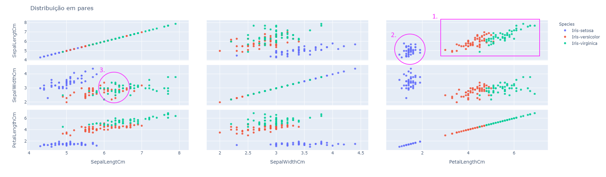

Este componente constrói uma representação matricial, na qual cada célula contém um gráfico de dispersão para um determinado par de atributos. Para tanto, é utilizada a biblioteca Plotly Express que permite a construção de elementos gráficos interativos. Este componente é interessante para analisar como dois atributos se relacionam entre si dentro de um banco de dados.
Espera-se como entrada para o componente uma tabela com colunas que representam valores numéricos, categóricos ou de data. A tabela deve ser de um dos seguintes tipos: Comma-separated values (.csv) ou Excel (.xls, .xlsx).
A seguir são listados todos os parâmetros utilizados pelo componente:
feature.feature.O retorno durante a experimentação ajuda o usuário a analisar como os atributos se relacionam entre si, auxiliando na visualização dos dados de uma maneira geral possibilitando insights para o processo de processamento de dados e treinamento de modelos de aprendizado de máquina.

Dicas para interpretação:
Uma maneira de interpretar esses gráficos é analisar quão correlacionados dois atributos são, para isso precisamos identificar padrões. Veja no retângulo em roxo (1.), em que observamos que quanto maior é o valor do atributo PetalLengthCM, também é maior o valor do atributo SepalLengthCM.
Além disso, selecionar um atributo para colorir os dados também nos permite entender como os dados podem se agrupar de diferentes formas de acordo com um par de atributos. Por exemplo no círculo em roxo (2.), observamos que há uma região onde todos os pontos percencem à Species (aributo alvo) Iris-setosa, já no círculo roxo (3.), há uma nuvem com mais de uma Species.